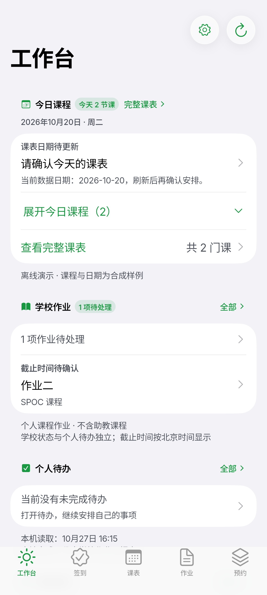

出门前，先知道今天
当天课程、签到状态、近期作业和个人待办集中在一屏。少切几个系统，先安排眼前的事。
今天的课、待交的作业、能签到的课、能坐的图书馆座位。打开 Ginkgo，就知道接下来要关注什么。
非官方个人开源项目。公开试用中，重要信息请以学校官方记录为准。

不是简单搬运网页，而是围绕一天的节奏，重新组织课程、学习和空间信息。
全部来自真实 Android 构建的离线演示模式。界面为合成样例，不含真实账号或个人数据。
适用于 Android 7.0 及以上的 ARM64 设备。暂不支持 32 位设备与 x86 模拟器安装包。
从本页或 GitHub Release 下载，核对版本与 SHA-256。第三方备用入口不是主下载源。
按 Android 系统提示允许浏览器安装未知来源应用。系统安装确认始终由你掌握。
使用本人的北航统一身份认证；也可以先不登录，用合成数据了解界面。
覆盖升级前建议备份重要个人待办；不建议降级或卸载。调试版与公开版签名不同时，可能需要先卸载，卸载会清除本机数据。
Ginkgo 已具备完整的日常使用界面与多项校园服务链路，但不同账号类型、学校系统状态和设备环境仍可能影响结果。
签到、预约、取消和作业提交均需逐次确认；结果不明时只回查，不自动重发。部分真实写入仍在验收，请以学校记录为准。
物理设备、完整 TalkBack、部分真实账号与非空数据仍在持续验收。借阅、门锁密码等功能不应被理解为所有账号均已验证。
附上版本、设备、账号类型、网络路线与复现步骤。不要提交密码、Cookie、真实学号、HAR 或未打码截图。
反馈 Android Beta 问题查询在设备进程内直连学校系统，或经北航官方 WebVPN。登录和提交会把相应数据发送给学校，但不会经过 Ginkgo 项目自建中转服务器。
不是。Ginkgo 是非官方个人开源项目，与北京航空航天大学及其任何部门无隶属、合作或授权关系。校园信息请以学校官方渠道为准。
不需要。使用本人的北航统一身份认证账号登录。学校系统的网络策略、验证码或维护状态可能影响服务，也可以先进入离线演示。
可在应用内检查、下载并校验更新，再交给系统确认安装；也可从本页下载新版 APK 覆盖安装。升级前建议备份重要个人待办，不建议降级。
校车目前提供官方公开时刻表，不包含应用内实时余票或购票。各账号可访问的学校服务不同，具体读写边界请查看功能说明。
0.1.0-alpha.6 · x64。只保证可编译，安装器未签名。
下载安装器 ↗便携 ZIPv0.1.0-alpha.7。保留原生源码与归档，不再做功能开发。
下载历史 DMG ↗无 App Store / TestFlight 发布，不再排期。
查看构建说明 ↗Ginkgo 仅供个人学习与自用。使用者应遵守学校服务条款与网络使用规定，不用于绕过风控或替代官方服务。软件依 MIT 许可按原样提供；请自行核对重要信息并承担使用风险。